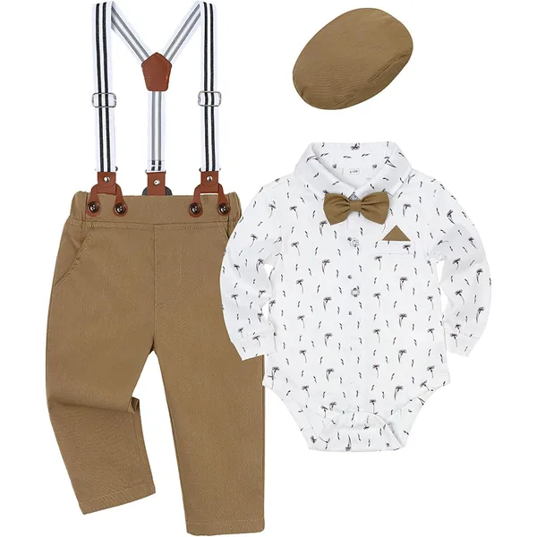

Foste convidado para um baby shower ou vais conhecer o bebé de alguém e não fazes ideia do que oferecer. A boa notícia: os melhores presentes de nascimento não são os mais originais — são os que os pais acabam por usar todos os dias e depois têm de comprar outra vez. Esta lista é feita a pensar nisso, e todos os artigos chegam a Portugal sem complicações.
Como Escolher um Presente que Não Vai Ficar na Gaveta
A maioria dos presentes de nascimento falha por uma de três razões: chega em tamanho recém-nascido quando já há dez peças iguais, é bonito mas impraticável, ou é uma daquelas coisas que só se usam uma vez. Três perguntas evitam quase sempre o erro:
- Isto acaba e tem de ser reposto? Se sim, é bom presente. Musselinas, babetes e bodies desgastam-se e sujam-se — nunca há a mais.
- Serve daqui a três meses? Os primeiros dias estão sempre bem servidos. Um presente para os 3–6 meses chega quando os outros já acabaram.
- Facilita a vida a alguém às 3 da manhã? Se a resposta for sim, é um presente excelente. Os pais lembram-se de quem lhes deu isso.
A Regra do Tamanho — O Erro Mais Comum
Se quiseres acertar à primeira, confirma a tabela de tamanhos de roupa de bebé antes de escolher.
Se ofereceres roupa, não ofereças tamanho recém-nascido. É o conselho mais útil deste artigo. Toda a gente oferece RN, muitos bebés nascem já a rebentar esse tamanho e uma parte significativa nem chega a usá-lo. O resultado são peças novas com etiqueta que vão diretas para a caixa das trocas.
| Tamanho | Idade aprox. | Boa ideia para presente? |
|---|---|---|
| RN / 56 | 0–1 mês | Não — toda a gente oferece este |
| 1M / 62 | 1–3 meses | Razoável, mas já muito coberto |
| 3M / 68 | 3–6 meses | Sim — o ponto ideal |
| 6M / 74 | 6–9 meses | Sim, sobretudo se pensares na estação |
Os 10 Melhores Presentes de Nascimento

Pack 4 Fraldas de Musselina Algodão Orgânico
Se só leres uma linha desta lista, que seja esta. As musselinas são a peça mais versátil do enxoval — manta leve, babete grande, protetor de ombro, resguardo do carrinho, cobertura para amamentar. Nunca há a mais, ficam mais macias a cada lavagem e continuam em uso ao fim de dois anos. É praticamente impossível oferecer isto e errar.
Ver na Amazon2. Saco de Dormir 0.5 TOG Algodão — 0–6 Meses
Um presente com peso real: os sacos de dormir são caros, os pais precisam de pelo menos dois (um lava, outro usa) e raramente compram o segundo antes de perceberem que fazia falta. Substituem cobertores soltos, que não são seguros no berço. Se quiseres oferecer algo genuinamente útil e um pouco mais substancial, é esta a escolha.
Ver na Amazon
3. Pack Bodies Manga Curta e Longa + Calças
Os bodies são o consumível número um dos primeiros meses — com regurgitações e fugas de fralda, podem ser três ou quatro mudas por dia. Um pack completo em tamanho 3M chega precisamente quando os do nascimento já não servem. Sem graça? Talvez. Usado até ficar puído? Garantidamente.
Ver na Amazon
4. Manta de Tricot Algodão Orgânico 90×70cm
Quando queres que o presente pareça um presente — bonito de embrulhar e de fotografar — sem deixar de ser prático. O tricot em algodão orgânico usa-se no carrinho, na sesta e na visita a casa dos avós. É a opção certa quando conheces bem os pais e queres algo com alguma presença.
Ver na Amazon
5. Chupeta Borracha Natural — Pack 2
Pequeno, bonito, barato e sempre necessário — as chupetas desaparecem com uma regularidade impressionante. O design dinamarquês com bico de borracha natural redondo dá-lhe ar de presente em vez de compra de supermercado. Excelente para juntar a outro presente ou para levar numa primeira visita.
Ver na Amazon
6. Conjunto Luvas + Meias + Touca Recém-Nascido — Pack 3
Um kit completo por pouco dinheiro, e uma das poucas coisas em tamanho recém-nascido que vale a pena oferecer — porque as luvas antiarranhões são genuinamente precisas nas primeiras semanas e perdem-se com uma facilidade absurda. Apresenta-se bem e resolve um problema concreto.
Ver na Amazon
7. Babete com Bolso Impermeável em Silicone
O presente que só faz sentido daqui a uns meses — e é exatamente por isso que é bom. Quando começar a diversificação alimentar, por volta dos 4 a 6 meses, os pais vão precisar disto e já ninguém está a oferecer nada. Silicone impermeável com bolso apanha-migalhas, limpa-se num segundo e vai à máquina.
Ver na Amazon8. Saco de Dormir 1,5 TOG de Bambu — 0–24 Meses
A alternativa de gama alta ao número 2 desta lista, e o presente ideal para oferecer em grupo. A viscose de bambu é termorreguladora e o ajuste acompanha o crescimento até aos 24 meses, o que estica muito o tempo de uso. O TOG 1,5 é o mais versátil para a maioria das noites em Portugal.
Ver na Amazon9. Pack 10 Muselinas / Fraldas de Pano Algodão
A versão em quantidade do presente número 1. Se preferes oferecer volume a marca, dez muselinas cobrem o dia a dia inteiro sem os pais terem de andar a lavar de urgência. Pouco glamoroso, altamente eficaz — e é o tipo de coisa que as mães dizem depois que gostavam de ter tido mais.
Ver na Amazon
10. Conjunto Cerimónia — Camisa + Suspensórios + Calças + Laço + Boné
Para quando queres oferecer algo especial e sabes que há um batizado a caminho. Cinco peças completas que resolvem o dia inteiro aos pais — e é precisamente o tipo de compra que ninguém faz com antecedência e que depois se faz à pressa. Escolhe um tamanho acima do atual: as cerimónias marcam-se para daqui a meses.
Ver na AmazonPresentes por Orçamento
Não há um valor certo para um presente de nascimento — depende inteiramente da relação. Como orientação:
| Orçamento | Boa escolha | Adequado para |
|---|---|---|
| € | Chupetas, kit luvas + meias + touca, babete de silicone | Colegas de trabalho, conhecidos |
| €€ | Pack de musselinas, pack de bodies, manta de tricot | Amigos, primos — a zona mais segura |
| €€€ | Saco de dormir, conjunto de cerimónia | Família próxima, padrinhos |
| Em grupo | Saco de dormir de bambu + musselinas + bodies | Equipa de trabalho, grupo de amigos |
O que Evitar Oferecer
Não é que sejam maus presentes — é que já lá estão, ou não serão usados:
- Roupa em tamanho recém-nascido: a categoria mais sobre-oferecida de todas. Salta este tamanho.
- Peluches grandes: não podem ir para o berço nos primeiros meses por razões de segurança, e ocupam espaço que ninguém tem.
- Almofadas, cobertores fofos e protetores de berço: não devem ser usados no berço de um bebé — colocam os pais na posição desconfortável de receber e não usar.
- Produtos de banho perfumados: muitos bebés têm pele reativa e os pais costumam já ter escolhido a marca que usam.
- Sapatos para quem ainda não anda: bonitos nas fotos, sem qualquer função e saem do pé em cinco minutos.
- Molduras e recordações personalizadas: a menos que sejam pedidas. É uma decoração muito pessoal e raramente coincide com o gosto de quem recebe.
Etiqueta — O que se Faz e o que Não se Faz
Faz
- Pergunta se já existe lista de nascimento antes de comprar
- Guarda o talão ou envia o recibo-presente — as trocas são normais
- Oferece tamanho 3M ou 6M em vez de RN
- Junta uma peça útil a um presente bonito
- Espera pelo convite antes de visitar
Não faças
- Aparecer sem avisar nas primeiras semanas
- Ficar melindrado se o presente for trocado
- Oferecer algo que exija montagem ou decisões aos pais
- Comprar equipamento grande sem perguntar (carrinho, cadeira auto)
- Insistir em pegar no bebé — deixa que ofereçam
Presente de Última Hora?
O bebé nasceu ontem e vais visitar amanhã. Sem drama — três opções que funcionam sempre e chegam depressa:
- Pack de musselinas: impossível errar, agrada a toda a gente, útil desde o primeiro dia.
- Chupetas bonitas: pequenas, económicas e sempre necessárias. Ficam bem embrulhadas com uma fita.
- Pack de bodies em tamanho 3M: chega quando os do nascimento deixarem de servir — e nessa altura ninguém já está a oferecer nada.